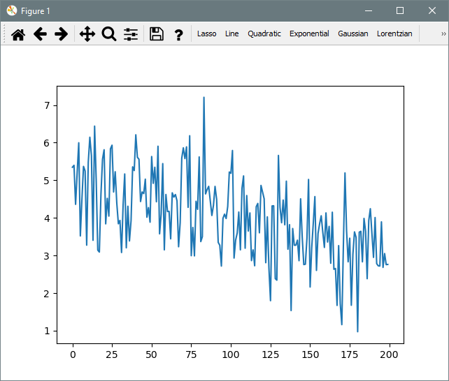
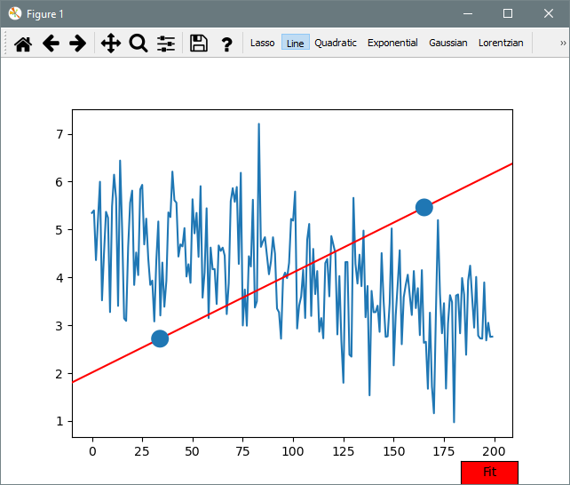
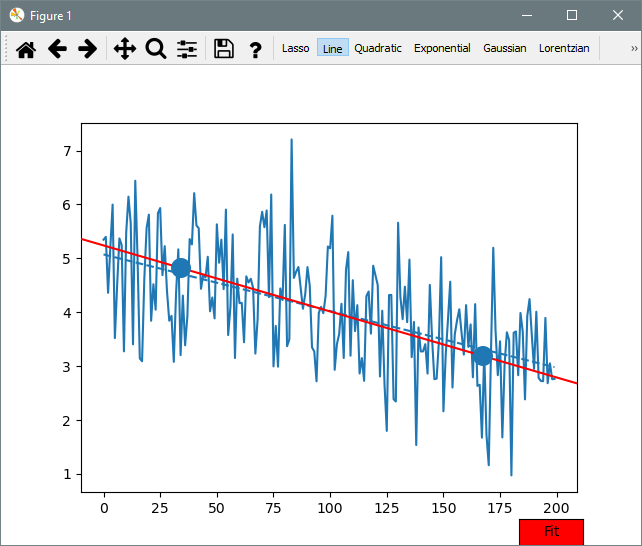
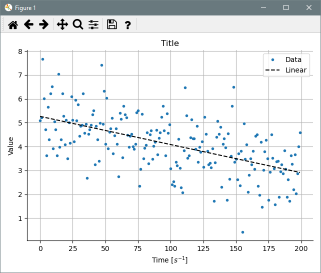

1. Quickstart
Lets start with something really easy. Fit a line with some noise \(\xi\) and save a figure with the plot.
\[
f(x) = m\cdot x + n + \xi
\]
We are going to use the following data:
import numpy as np
def dataFunction(x, m, n):
return m*x + n
noise = np.random.normal(size=200)
xdata = np.arange(200)
ydata = dataFunction(xdata, -2/200, 5) + noise
Now we call the Fitter:
import matplotlib.pyplot as plt
import itfit
fitter = itfit.Fitter(xdata, ydata)
fitter()
plt.show()

Now select the Line tool. A line with 2 dots should appear:

Those points are draggable, move them around to set the initial conditions in the search of the optimal parameters. Once you are close to the expected result press the Fit button bellow.

A dashed line will appear. This is the fit, but we want it prettier. We can use the default plot for now:
This would yield
And finally we can save the plot with:
If you want your fit parameters and statistics you need to do the following:
The return value will be a FitResultContainer (or a list of them, in case multiple fits were selected). With this object you could print basic information about the fit with:>> print(fit)
ItFit FitResultContainer
Using fit function: linear
Scipy result message: The relative error between two consecutive iterates is at most 0.000000
Optimal parameters:
values: [-0.01436165 5.40745201]
errors: [0.00121393 0.13964695]
covariance:
[[ 1.47362904e-06 -1.46626090e-04]
[-0.00014663 0.01950127]]
You could also evaluate a new data point x with the new fit function with:
Where to go next:
- If you are interested in more complex functions see FunctionBuilder example.
- For further plot customization see PlotBuilder example.